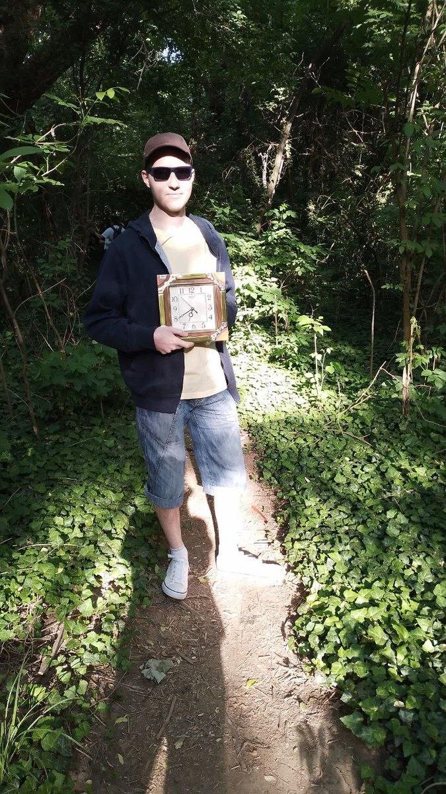

Photographe et vidéaste — Obernai, Strasbourg, Metz
« L'odeur des roses, faible, grâce
Au vent léger d'été qui passe, »
Paul Verlaine

Adrian Margolin, originaire de Kharkiv et grandement inspiré par l'école photographique puissante de cette ville, pose le regard sur l'Alsace. Nourri par la peinture, le cinéma d'auteur et l'histoire de l'art en général – autant de terrains où je continue de chercher ce qui fait la beauté d'une image et le sens de la création.